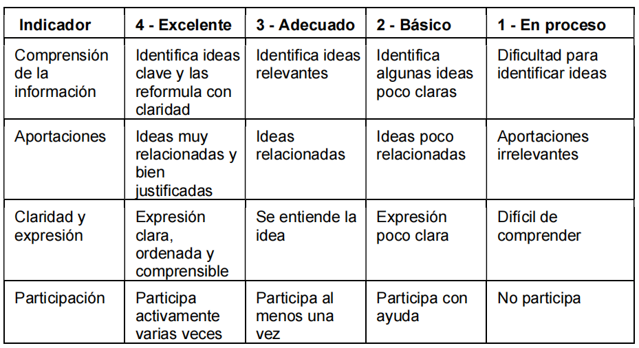
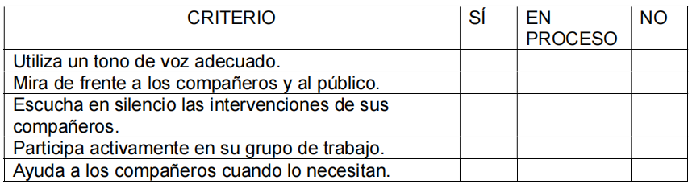

Ejemplos de actividades con los instrumentos de evaluación
Mural de ideas sobre animales.
Los alumnos de segundo de primaria tras el visionado de los vídeos sobre
animales vertebrados e invertebrados van a ir exponiendo sus ideas de forma que
hagamos un mural colaborativo entre todos. Se realizará en dos sesiones, una
para cada grupo de animales con el grupo clase completo. La herramienta que
usamos es Padlet.
Está vinculada con el criterio de evaluación LCL2.1 Comprender el sentido de
textos orales y multimodales sencillos, reconociendo las ideas principales y los
mensajes explícitos e implícitos más sencillos.
El instrumento principal será una rúbrica complementada con observación directa:

Texto
Aprendemos a ser actores.
Mediante una infografía que visionamos en Padlet los alumnos van a aprender a
ser actores aplicando el código de honor del buen artista. Se realizará en
pequeños grupos y se llevará a cabo durante una sesión.
Está vinculada con el criterio de evaluación LCL3.2 Participa en interacciones
orales espontáneas, incorporando estrategias elementales de escucha activa y de
cortesía lingüística.
El instrumento principal será una lista de cotejo complementada con observación
directa:
